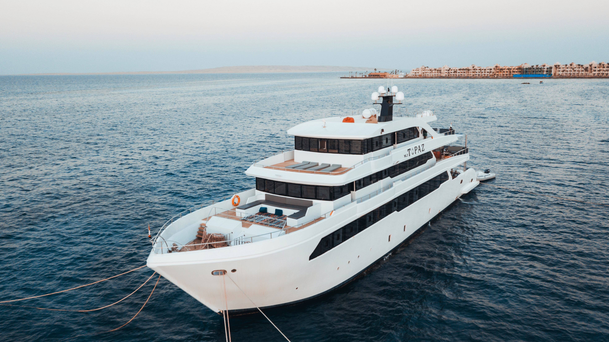
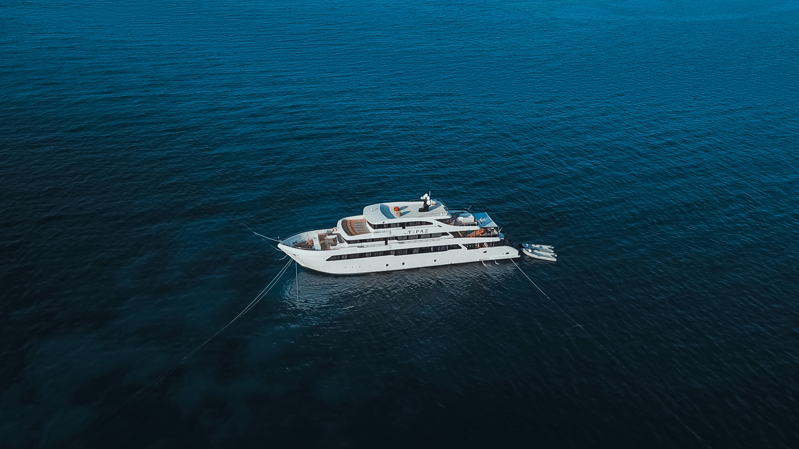
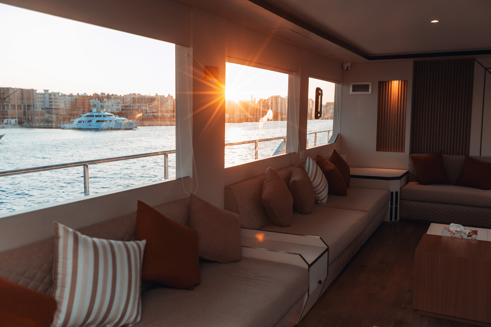
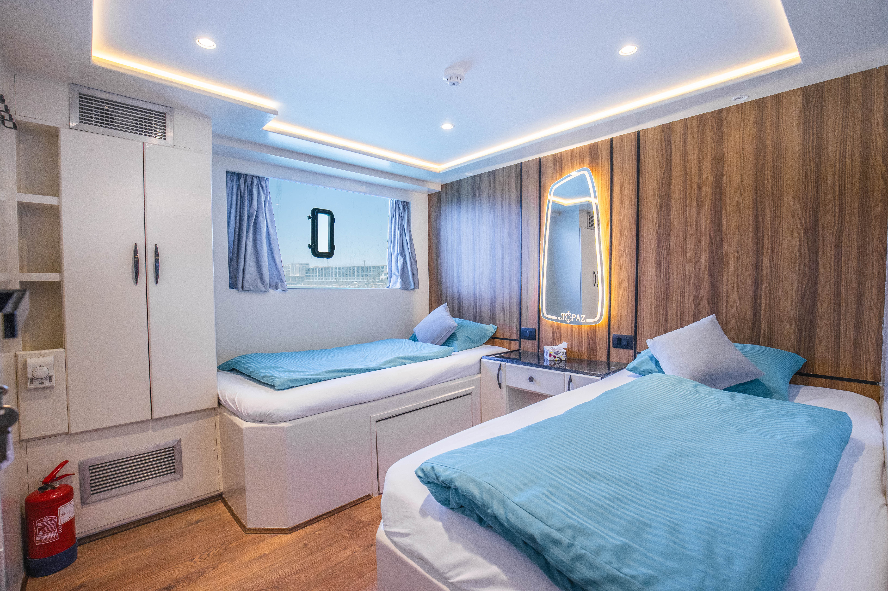

Meet M.Y. TOPAZ.
A Red Sea liveaboard.
Egypt, with Sea Pirates Egypt.
See the vessel, explore the possibilities and start a conversation about the trip you have in mind.
Macro Diving may earn a commission on qualifying bookings we introduce. You book and pay Sea Pirates Egypt directly.
Request an introduction
Your trip.
A personal introduction.
Sea Pirates Egypt operates M.Y. TOPAZ in the Red Sea. Each sailing has its own itinerary; no particular departure, dive site or cabin is promised here.
Operated by Sea Pirates Egypt. The operator’s schedule is a reference, not a tracked Macro Diving checkout.
Tell us what you have in mind.
Your preferred dates, group size and interests help start the conversation. No payment details are needed.
We introduce you, with your permission.
Macro Diving can introduce you to the operator by email. Sea Pirates Egypt registers the named referral under Macro Diving.
Plan directly with the operator.
Sea Pirates Egypt confirms the itinerary, suitability, availability, prices, booking terms and guest payments. An enquiry is not a reservation.
A look aboard.
Official vessel photographs supplied by Sea Pirates Egypt. The cabin shown is an example; confirm your actual cabin and sailing directly.



Start with a conversation.
Request a named introduction to Sea Pirates Egypt for M.Y. TOPAZ. There is no checkout on Macro Diving and no booking is made by opening this email.
We may earn a commission if an introduction leads to a qualifying booking. A direct visit to the operator’s website or email is not automatically credited to Macro Diving.
Choose what you share.
To introduce you, we need your permission to pass your name, email address and the trip details you provide to Sea Pirates Egypt. Keep the consent line in your message if you want us to make that introduction.
The button opens an editable draft in your email app. It does not send anything. Please review it before sending and leave out passports, card details or other sensitive information.
Write my introduction requestNo email app? Write to hello@macrodiving.com, name M.Y. TOPAZ and include:
I consent to Macro Diving sharing my name, email address and trip details in this enquiry with Sea Pirates Egypt for an M.Y. TOPAZ introduction.
You can ask a general question without agreeing to an introduction. See our email privacy information.